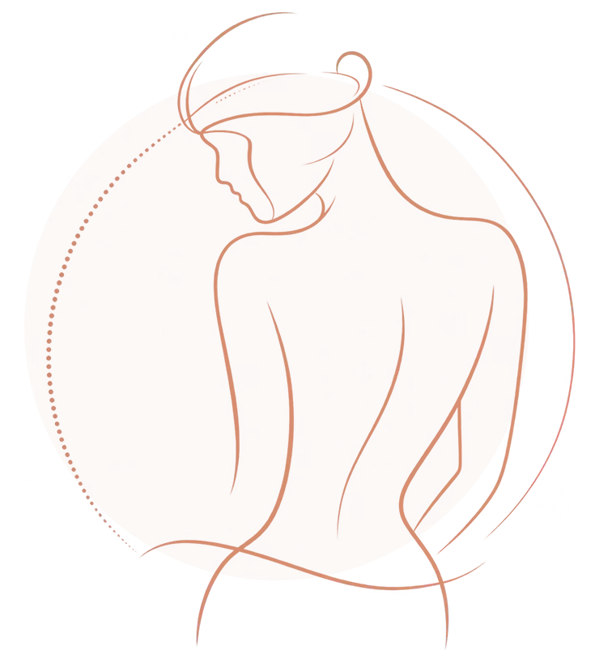
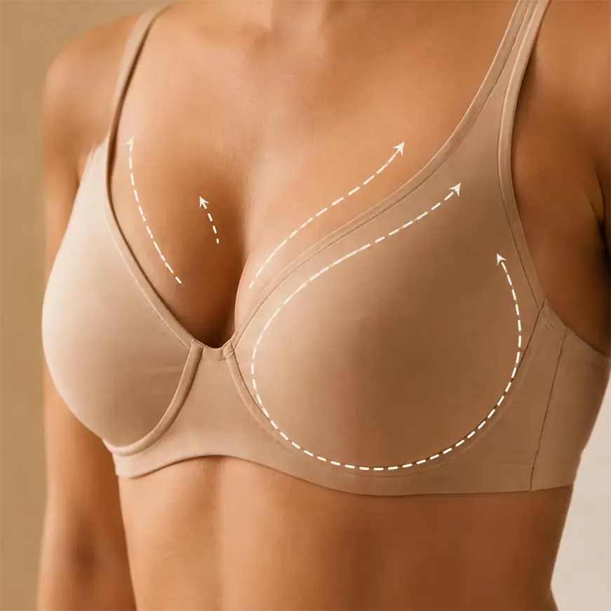
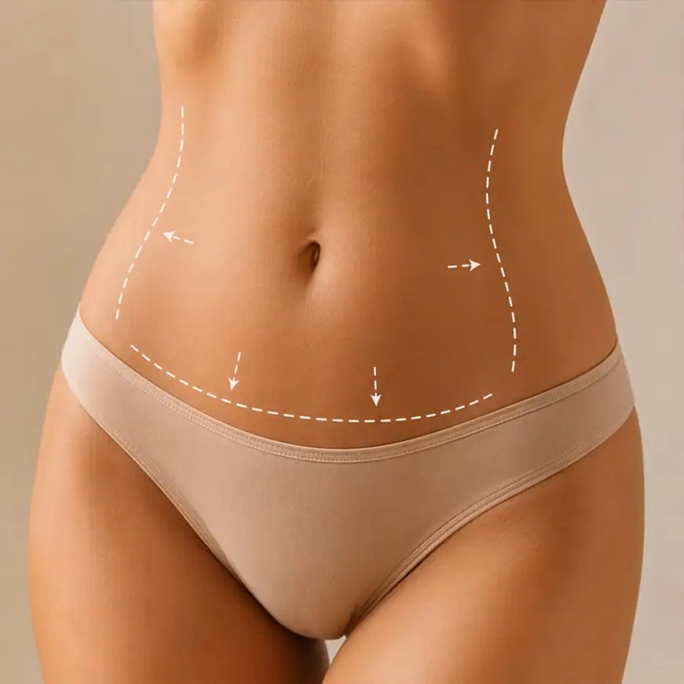
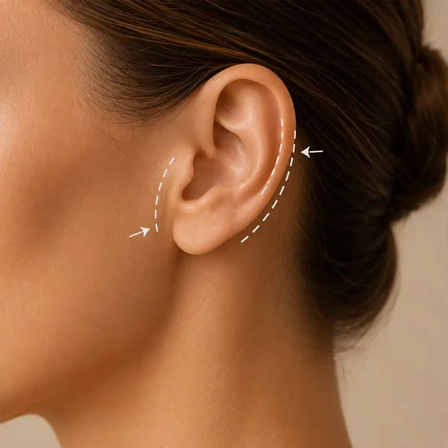

Paleta de cores
Medida no navegador: fundos ponderados pela área ocupada, textos pela quantidade de caracteres. Destaques reúnem cores saturadas e fundos de botão.
Fundos
#F8F8F8
Fundo · 76.5%
rgb(248, 248, 248)
rgb(248, 248, 248)
#272727
Fundo · 23.5%
rgb(39, 39, 39)
rgb(39, 39, 39)
Textos
#CFCFCF
Texto · 30.3%
rgb(207, 207, 207)
rgb(207, 207, 207)
#313131
Texto · 22.0%
rgb(49, 49, 49)
rgb(49, 49, 49)
#525252
Texto · 19.7%
rgb(82, 82, 82)
rgb(82, 82, 82)
#272727
Texto · 16.0%
rgb(39, 39, 39)
rgb(39, 39, 39)
#FFFFFF
Texto · 4.1%
rgb(255, 255, 255)
rgb(255, 255, 255)
#7A7A7A
Texto · 4.0%
rgb(122, 122, 122)
rgb(122, 122, 122)
Destaques
#BD4A14
Destaque
rgb(189, 74, 20)
rgb(189, 74, 20)
Gradientes
linear-gradient(283deg, rgb(39, 39, 39) 42%, rgb(36, 36, 36) 87%)linear-gradient(156deg, rgb(189, 74, 20) 25%, rgb(189, 74, 20) 69%)linear-gradient(90deg, rgb(189, 74, 20) 0%, rgb(189, 74, 20) 100%)Tipografia
Apparat · Aa Bb Cc 0123
100% do texto · Se a sua cabeça não desliga, esta página é para você.Escala usada (desktop 1440px)
| Tamanho | Peso | Família | Amostra |
|---|---|---|---|
| 48px | 600 | Apparat | Texto de exemplo |
| 48px | 900 | Apparat | Texto de exemplo |
| 40px | 600 | Apparat | Texto de exemplo |
| 25px | 400 | Apparat | Texto de exemplo |
| 24px | 500 | Apparat | Texto de exemplo |
| 22px | 500 | Apparat | Texto de exemplo |
| 21px | 400 | Apparat | Texto de exemplo |
| 21px | 600 | Apparat | Texto de exemplo |
| 19px | 400 | Apparat | Texto de exemplo |
| 18px | 400 | Apparat | Texto de exemplo |
Mobile (390px): 34px/600, 34px/900, 32px/600, 30px/600, 22px/500, 21px/400, 19px/500, 18px/400 · H1 no mobile: sem h1 semântico
Tags
| Tag | Família | Tamanho | Peso | Altura de linha | Espaçamento | Caixa | Cor |
|---|---|---|---|---|---|---|---|
| <h2> | Apparat | 40px | 600 | 44px | normal | none | #272727 |
| <h3> | Apparat | 48px | 600 | 48px | -0.1px | none | #F5F5F5 |
| <p> | Apparat | 17.6px | 400 | 26.4px | normal | none | #313131 |
Botões
Recriados com os estilos computados reais. Efeitos de hover e animação não aparecem aqui; veja a seção de animações.
QUERO AGENDAR MINHA AVALIAÇÃO
fundo #00000000 · texto #FFFFFF · raio 14px · padding 19.2px 16px · 16px/600 none · 2x na páginaQUERO AGENDAR MINHA AVALIAÇÃO
fundo #00000000 · texto #FFFFFF · raio 14px · padding 24px 16px · 16px/600 none · 1x na páginaCards e containers
Card (3x)
Mamoplastia Redutora Indicada para reduzir o excesso de tecido mamário e buscar mais confo
raio 20px · sombra none · borda 1px solid rgba(2, 1, 1, 0.09) · 401x522pxCard (1x)
SUA JORNADA COMEÇA AQUI 01 Avaliação Entendimento das suas necessidades, objetivos e carac
raio 16px · sombra none · borda 1px solid rgba(189, 74, 20, 0.16) · 563x497pxBordas, raios e sombras
11px
20px
14px
0px 0px 30px 30px
16px
20px 20px 0px 0px
Sombras
rgba(189, 74, 20, 0.176) 0px 0px 3.67986px 19.5678pxEspaçamentos
- Largura do conteúdo mais comum: 1250px
- Padding vertical das seções (topo/base): 0px/0px (8x)
- Gaps mais usados (flex/grid): 20px, 0px 10px, 10px 0px, 10px, 5px 0px, 18px
- Altura total da página: 5223px em 8 seções
Estrutura e ritmo de cores das seções
Cada faixa é uma seção de topo, com altura proporcional e a cor ou imagem de fundo real.
1. hero Um olhar individualizado para transformar sua relação com o 682px · padding 0px/0px
2. Quando a cirurgia não é apenas estética 674px · padding 0px/0px
3. servicos PROCEDIMENTOS 1053px · padding 0px/0px
4. prova-social DEPOIMENTOS 370px · padding 0px/0px
5. sobre Dr. Vinícius Cruz Prieto Silva 656px · padding 0px/0px
6. prova-social Seu caso merece uma avaliação individual 800px · padding 0px/0px
7. faq FAQ 759px · padding 0px/0px
8. rodape Acesso rápido 228px · padding 0px/0px
Animações, ícones e bibliotecas
- Keyframes próprios: pisca, showFromBottom
- Animações de entrada do Elementor: nenhuma
- Classes de scroll reveal da casa: nenhuma
- Ícones: 16 SVG, 0 ícones de fonte
- Bibliotecas e tags detectadas: ga4, google-ads, gsap, gtm, jquery, lottie, swiper
Snippets da biblioteca presentes nesta página
- Nenhum snippet da biblioteca identificado.
Imagens do site



